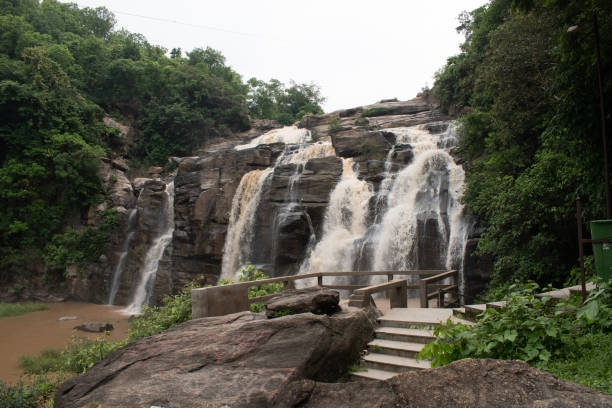
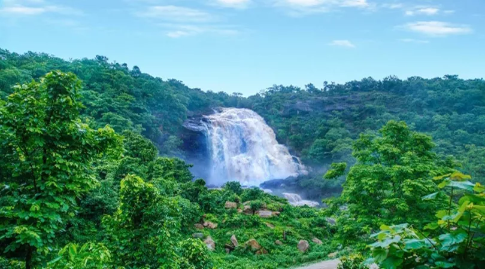
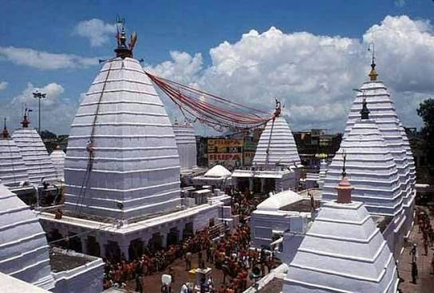
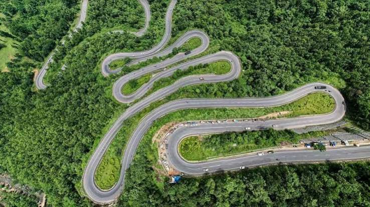
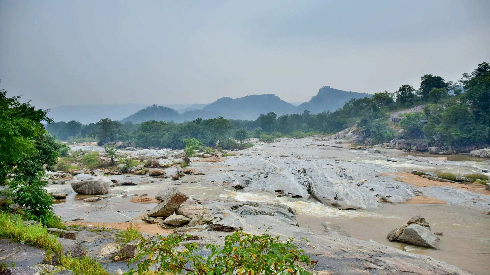
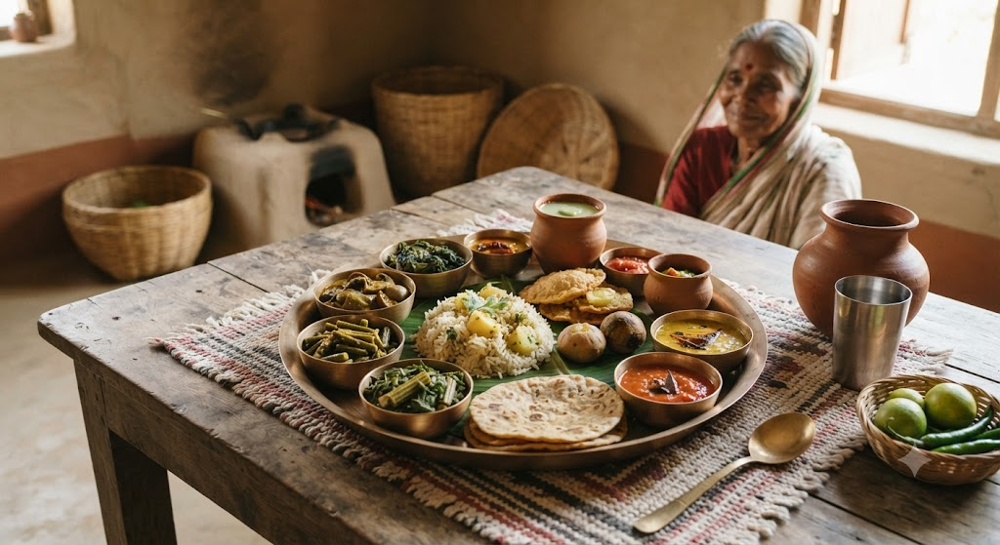

01
Ranchi
City of Waterfalls — famous for Hundru, Jonha, and Dassam waterfalls, Tagore Hill, Pahari Mandir, and pleasant plateau breezes.

Discover the land of cascading forest waterfalls, sacred Jyotirlinga shrines, ancient Chota Nagpur plateau hills, rich mineral wealth, and deep tribal heritage.
Explore Jharkhand ↓Jharkhand, meaning "The Land of Forests", is a scenic plateau state renowned for its lush sal groves, mineral reserves, wildlife sanctuaries, and rich indigenous Santhal, Munda, and Oraon traditions.
From the cascading waters of Hundru and Dassam Falls in Ranchi to the sacred pilgrimage of Baba Baidyanath Dham in Deoghar, the tigers of Betla, and the ethereal sunrises of Netarhat, Jharkhand offers a refreshing retreat into raw natural beauty.
Famous waterfalls, sacred pilgrimage sites, and scenic hill plateaus across Jharkhand.

City of Waterfalls — famous for Hundru, Jonha, and Dassam waterfalls, Tagore Hill, Pahari Mandir, and pleasant plateau breezes.

Major spiritual center — home to Baba Baidyanath Dham (one of the 12 sacred Jyotirlingas), host of the annual holy Shravani Mela.

Betla National Park in Latehar — renowned for dense sal forests, wild elephants, tigers, bison, and the historic 16th-century Chero Forts.

Queen of Chotanagpur — an idyllic hill station perched at 1,128 meters, celebrated for pine forests, Upper Ghaghri Falls, and sunset viewpoints.
Jharkhand's indigenous cuisine is rustic, wholesome, and nutritious — centered around rice, pulses, wild forest mushrooms, bamboo shoots, and roasted spices.

Rich indigenous customs of 32 tribal communities (Santhal, Munda, Ho, Oraon) celebrating nature worship and sacred Sarna groves.
UNESCO-recognized Seraikela Chhau masked dance and martial Paika performances driven by the energetic beats of Mandar and Nagada drums.
Springtime Sarhul worship of Sal tree blossoms and the autumn Karma festival honoring the deity of fertility and prosperity.
GI-tagged traditional ritualistic mural paintings created by tribal women on mud house walls using natural red, black, and white clay pigments.
Discover all 28 states, local food specialties, and centuries of living traditions.
← Back to All States